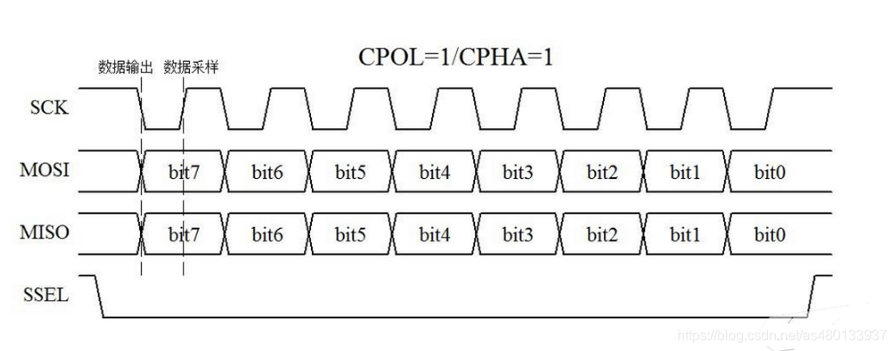
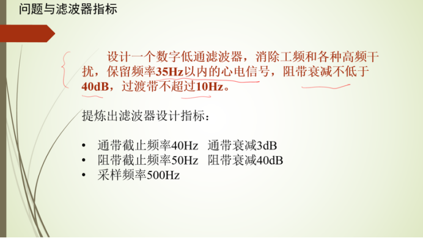

心电信号采集与处理系统
本项目设计并实现了一套完整的心电（ECG）信号采集与处理系统。硬件端采用 ADS1292R 模拟前端芯片 通过 SPI 总线与 STM32 通信，完成心电信号的高精度采集；软件端分别在 MATLAB 与 STM32 嵌入式平台上 实现了直流限波、FIR 低通滤波、FFT 频谱分析以及心率特征提取，最终将处理后的波形与心率参数 显示在 LCD 屏幕上，并可采集真实人体心电信号。
1 项目需求分析
- ADS1292R 芯片通过 SPI 读取心电信号，验证 SPI 通信正确性
- 能够调用内部测试信号，确认 MCU 正常读取与数据解析
- 设计滤波函数：通带截止频率 40 Hz（衰减 3 dB），阻带截止频率 50 Hz（衰减 40 dB），采样频率 500 Hz
- 分析滤波后信号的峰峰值、心率等特征
- 处理后的信号及特征参数显示在 LCD 屏幕上
- 能够采集并显示真实人体心电信号
2 ADS1292R 与 SPI 通信
2.1 SPI 协议概述
SPI（Serial Peripheral Interface）是一种全双工、同步通信总线，由 Motorola 定义。 使用四根信号线：MISO（主入从出）、MOSI（主出从入）、SCLK（时钟）、CS（片选）。 SPI 以主-从模式工作，主设备提供时钟，读/写操作同步进行——发一个字节必然收到一个字节。
SPI 的四种工作模式由 CPOL（时钟极性）与 CPHA（时钟相位）组合决定： CPOL 定义空闲态电平，CPHA 定义数据采样边沿。ADS1292R 使用 Mode 1（CPOL=0, CPHA=1）。

2.2 硬件接线
ADS1292R 模块共 12 个输出引脚，关键接线如下：
| 引脚 | 连接 | 功能 |
|---|---|---|
| SPI_SCK | STM32 SPI CLK | SPI 时钟信号 |
| SPI_MISO | STM32 SPI MISO | ADS→STM32 数据 |
| SPI_MOSI | STM32 SPI MOSI | STM32→ADS 命令 |
| SPI_CS0 | STM32 GPIO | 片选信号 |
| ADS_DRDY | STM32 EXTI | 数据就绪中断 |
| ADS_START | STM32 GPIO | 采集启动 |
| ADS_PWDN | STM32 GPIO | 复位/掉电 |
| VDD ↔ 3.3V | 跳线帽 | 电压转换（5V→3.3V 逻辑） |
2.3 数据读取与解码
发送 CMD_RDATA (0x12) 命令后，ADS1292R 回传 9 字节数据：
状态字节（3B）+ 通道 1 数据（3B）+ 通道 2 数据（3B）。
通道数据为 24 位有符号补码，需拼接为 int32 并处理符号位扩展：
int32_t raw = (buff[4] << 16) | (buff[5] << 8) | buff[6];
if (raw & 0x800000) // bit23 为符号位
raw |= 0xFF000000; // 扩展为 32 位有符号数
float voltage_mV = raw * Vref / (gain * 8388607.0f) * 6.0f;
其中 Vref 为内部参考电压，gain 为可编程增益，乘以 6 倍
为按芯片手册恢复实际采集电压值（单位 mV）。

3 MATLAB 信号处理验证
3.1 原始信号与频谱分析
将 SPI 读取的原始信号通过串口保存为 CH1.txt，导入 MATLAB 显示波形。
对原始信号进行 FFT 变换绘制频谱图，可观察到直流分量（0 Hz）、心电有效频段（1–40 Hz）
以及工频干扰（50 Hz 及谐波）。

3.2 直流限波
设计陷波器滤除 0 Hz 直流分量。利用传递函数 H(z) = (1 − z⁻¹) / (1 − αz⁻¹)，
其中 α 接近 1（典型值 0.995），在 0 Hz 处产生深度衰减。
调用 MATLAB filter() 函数完成滤波。

3.3 FIR 低通滤波器
根据阻带衰减不低于 40 dB 且过渡带不超过 10 Hz 的要求，
利用 MATLAB filterDesigner 设计 FIR 低通滤波器。
选择 Chebyshev 窗（在给定窗口长度下提供最小主瓣宽度），滤波器阶数为 160。
滤波器通过对当前点及其前 160 个点的加权求和计算输出。

4 STM32 嵌入式实现
4.1 嵌入式 FIR 滤波
将 MATLAB 设计的 FIR 滤波器系数（81 阶 Chebyshev 窗，针对嵌入式精简）
导出为 C 数组，在 STM32 上利用 CMSIS-DSP 库的 arm_fir_f32 函数实现实时滤波。

4.2 嵌入式 FFT 频谱分析
采用 CMSIS-DSP 的 arm_cfft_f32 函数在 STM32 上进行 1024 点复数 FFT，
计算幅度谱并在 LCD（240×320）上实时绘制。FFT 长度选择 1024 以在频率分辨率（约 0.49 Hz）
与计算时间之间取平衡。
4.3 心率提取
对滤波后信号进行峰值检测（自适应阈值），计算相邻 R 波间隔（RR interval）， 取其倒数乘以 60 得到 BPM。同时计算峰峰值（max − min）作为信号质量指标。 所有参数实时更新并显示在 LCD 屏幕上。
5 演示视频
6 项目成果
- 完成 ADS1292R 的 SPI 通信驱动与 24-bit 数据解码
- MATLAB 实现直流限波 + 160 阶 Chebyshev 窗 FIR 低通滤波器（通带 40 Hz / 阻带 50 Hz）
- STM32 上基于 CMSIS-DSP 实现实时 FIR 滤波与 1024 点 FFT
- 推导并实现自适应阈值 R 波检测与心率计算算法
- LCD 实时显示波形、频谱、心率与峰峰值
- 成功采集并处理真实人体心电信号